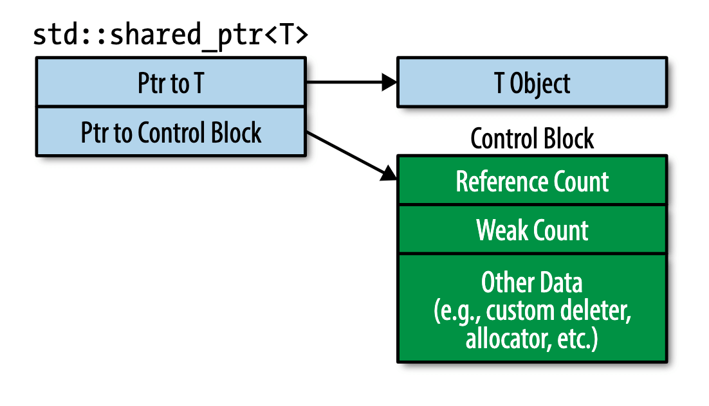

《Effective Modern C++》读书笔记（一）
《Effective Modern C++》这本书主要介绍了 C++11 与 C++14 中的一些新的语言特性及编码建议。由于这段时间忙于它事，看书的速度会放缓，因此关于这本书的内容就一边读一边整理记录了。同《Effective C++ 3th》一样，这本书的行文也是按照“建议条目”的方式通过几个大的主题分门别类进行介绍的，其中部分之前博客文章中已经提到过得内容将不再赘述。
类型推导
- Page 11接受左值引用（T&）的模板参数类型推导步骤：
- 如果传入表达式是指针或者引用，则指针或引用类型将被忽略；
- 根据模式对比来直接推导 T 的类型；
template<typename T>
void foo(T& arg) {} // ParamType;
int main(int argc, char** argv) {
int x = 10;
const int cx = x;
const int& rx = x;
foo(x); // T = int, ParamType = int&;
foo(cx); // T = const int, ParamType = const int&;
foo(rx); // T = const int, ParamType = const int&;
return 0;
}
- Page 14接受右值引用（T&&）的模板参数类型推导步骤：
- 如果传入表达式是左值，则 T 和 ParamType 将被推导为左值引用；
- 否则，如果传入表达式是右值，则按照之前的推导方式进行；
template<typename T>
void foo(T&& arg) {} // ParamType;
int main(int argc, char** argv) {
int x = 10;
const int cx = x;
const int& rx = x;
foo(x); // T = int&, ParamType = int&;
foo(cx); // T = const int&, ParamType = const int&;
foo(rx); // T = const int&, ParamType = const int&;
foo(10); // T = int, ParamType = int&&;
return 0;
}
- Page 15接受纯值类型（T）的模板参数类型推导步骤：
- 如果传入表达式是引用，则忽略引用部分；
- 同时，忽略顶层的 CV 限定符；
template<typename T>
void foo(T arg) {} // ParamType;
int main(int argc, char** argv) {
int x = 10;
const int cx = x;
const int& rx = x;
const int* const px = &x;
foo(x); // T = int, ParamType = int;
foo(cx); // T = int, ParamType = int;
foo(rx); // T = int, ParamType = int;
foo(10); // T = int, ParamType = int;
foo(px); // T = const int*, ParamType = const int*;
return 0;
}
- Page 16数组与模板参数推导，传值情况下数组将 decay 为指针，而引用传递下可以保持类型：
template<typename T>
void foo(T arg) {} // ParamType;
template<typename T>
void bar(T& arg) {} // ParamType;
int main(int argc, char** argv) {
int arr[10] = {};
foo(arr); // T = int*;
bar(arr); // T = int[10], ParamType = int(&)[10];
return 0;
}
- Page 16模板数组大小推导（基于引用传递），可以用于复用由列表初始化构造的数组的大小：
template<size_t N>
constexpr size_t arrSize(int(&)[N]) { return N; }
int main(int argc, char** argv) {
int arr[] = {1, 2, 3, 4};
std::cout << arrSize(arr) << std::endl;
return 0;
}
- Page 17当模板参数实参为函数名时，同数组一样，在传值（T）的情况下会 decay 为函数指针，否则需要以引用（T&）的方式来传递。
- Page 20auto 类型推导规则实际上与 template 模板参数推导规则类似：可以把 auto 比作模板参数 T，连带其他对 auto 的所有修饰符共同组成 ParamType，右侧赋值类比为传递给模板参数的实参。
- Page 22默认情况下，当使用 auto 来推导通过 “{}” 进行初始化的值时，类型将被推导为
std::initializer_list<>，且列表中的元素必须可以被推导为同一类型。相反，模板参数则不支持对 “{}” 初始化列表的推导。 - Page 23C++14 中对 auto 的新用法（以下两处 auto 使用的是模板推导规则，因此不支持对 “{}” 的推导）：
auto dbl(int x) { return 2 * x; } // 返回值类型推导；
int main(int argc, char** argv) {
auto t = dbl(10);
auto mul = [](const auto x, const auto y){ return x * y; }; // lambda 参数类型推导；
std::cout << mul(t, 10) << std::endl;
return 0;
}
- Page 26
decltype(auto)的用法（可以理解为让 auto 以 decltype 的方式进行类型推导，并同时保留顶层 CV 标识符）：
template<typename T, typename I>
decltype(auto) accessCon(T& c, I i) { return c[i]; } // 返回 int&；
int main(int argc, char** argv) {
std::vector<int> v = {0};
accessCon(v, 0) = 10000;
std::cout << v.at(0) << std::endl; // 10000;
return 0;
}
int main(int argc, char** argv) {
const volatile int x = 100;
decltype(auto) y = x; // y 为 “const volatile int” 类型；
return 0;
}
- Page 29
decltype(auto)的错误用法（返回了临时值的引用）：
decltype(auto) foo(int x) { return (x); } // 返回临时值的引用；
int main(int argc, char** argv) {
auto& v = foo(10);
return 0;
}
- Page 31可以借助编译器的报错来查看实际传递给模板参数的值类型：
template<typename T>
class A; // 通过未定义的模板实例化引起错误；
int main(int argc, char** argv) {
const int x = 10;
decltype(auto) y = x;
// error: implicit instantiation of undefined template 'A<const int>';
// A<decltype(y)> z;
return 0;
}
- Page 32可以用 GNU 的
c++filt命令行工具来对 mangling 的符号进行 demangling：
c++filt PKi // int const*;
- Page 33对于 typeid 的类型推导将遵循类似：以值传递的方式向一个模板参数 T 传值的过程，因此会影响到推导过程中的引用类型以及顶层 CV 特性的传递。
template<typename T>
class A;
int main(int argc, char** argv) {
int x = 10;
const int* const px = &x;
const int& rx = x;
std::cout << typeid(px).name() << std::endl; // PKi -> int const*;
std::cout << typeid(rx).name() << std::endl; // i -> int;
return 0;
}
auto
- Page 42auto 变量必须被初始化，通常不受类型不匹配的影响，这些类型不匹配则有可能导致可移植性或效率问题。使用 auto 可以简化代码重构的过程，并且与被明确指定类型的变量相比，通常只需要较少的改动。
- Page 44由于标准库使用 bit 来保存布尔值，因此我们无法使用对该值的引用（引用无法指向这个 bit）。因此只能从
std::vector<bool>::reference类型向 bool 类型进行隐式转换。
std::vector<int> v = {true};
int main(int argc, char** argv) {
auto x = v.at(0); // std::__1::vector<bool>::reference;
bool y = v.at(0); // bool;
// bool& z = v.at(0); // 错误；
return 0;
}
- Page 48“不可见”的代理类型可能导致 auto 推断出初始化表达式的“错误”类型。比如：
std::vector<bool>::reference这类代理类型。通过显式表明所需类型可以使 auto 推断出想要的类型：
auto index = static_cast<int>(d * c.size());
使用现代 C++ 技术
- Page 49“()” 与 “{}” 在对象初始化时的区别：
struct B {
B(int x) {};
B(const B& v) {}
};
int main(int argc, char** argv) {
B x(10), // 构造函数初始化；
y = {10}, // 隐式构造函数初始化；
B z = x; // 拷贝构造初始化；
return 0;
}
- Page 51使用 “{}” 初始化可以统一默认构造函数和其他构造函数的调用方式：
struct B {
B() = default;
B(int x) {};
};
int main(int argc, char** argv) {
B x{}; // 否则需要使用不能带有任何 “()” 的方式：B x;
B y(10);
return 0;
}
- Page 54“{}” 初始化更倾向于优先匹配以 std::initializer_list 作为参数的构造函数。只有在该版本即使通过类型转换也无法被调用时，才会再次从其他重载的构造函数中进行选择。
- Page 55当类存在一个默认构造函数以及一个接受 std::initializer_list 的构造函数时，采用空花括号（表示无参）初始化的对象将匹配默认构造函数。若要调用初始化列表的版本，则需要通过 “({})” 或 “{}” 嵌套的方式。
- Page 57当使用模板时，需要考虑 “()” 初始化与 “{}” 初始化的区别。比如在模板内部初始化 std::vector 时，“(10, 20)” 与 “{10, 20}” 便会产生不一样的效果。
- Page 59nullptr 的实际类型为 std::nullptr_t，该类型可以被隐式转换为指针类型，而无法被转换为数值类型。
- Page 62推荐使用 nullptr 代替 0 和 NULL。
- Page 64命名模板无法基于 typedef 实现，而只能使用 using：
template<typename T>
using TypedVector = std::vector<T>;
int main(int argc, char** argv) {
TypedVector<int> v = {1, 2, 3};
return 0;
}
- Page 65诸如 MyAllocList
::type 等基于模板类型的语句中，其中的 “type” 具体指代的内容（类型定义、成员）依赖于 T 的具体类型。 - Page 66traits-class 在 C++11（内部以 typedef 实现）与 C++14 中（函数名通常以 “_t” 结尾，内部以 using 实现）的不同版本：
template<typename T>
typename std::remove_const<T>::type tx; // C++11 版本，内部使用 typedef 实现；
template<typename T>
std::remove_const_t<T> ty; // C++14 版本，内部使用 using 实现；
int main(int argc, char** argv) {
tx<const int> = 10;
ty<const int> = 100;
return 0;
}
- Page 69unscoped-enum 一般无法进行 forward-declaration，即前置声明。只有在其带有指定底层存储类型时才可以。
- Page 70scoped-enum 的前置声明可以将枚举类的声明和定义分开，实现头文件和实现文件的分离式编译，以提高编译效率。
- Page 73使用名为 “std::underlying_type_t” 的 traits 返回 enum 的底层类型以进行编译时运算：
template<typename E>
constexpr auto toUType(E enumerator) noexcept {
return static_cast<std::underlying_type_t<E>>(enumerator);
}
int main(int argc, char** argv) {
enum class e { A, B };
int arr[toUType(e::B)] = {0};
return 0;
}
- Page 75C++98 隐藏成员函数的方式：将其声明为 private（用户无法访问），并不予提供实现（友元访问时由链接器进行阻止）。
- Page 76将删除函数标记为 public 可以在其被使用到时提供更好的编译器报错信息（编译器会先检查可访问性，然后再检查 =delete 状态）。
- Page 76使用 =delete 来禁止需要被禁用的一组重载函数；使用 =delete 也可以禁用模板函数/类模板函数的特定实例化版本（使用方式同上）：
bool isLucky(int number);
bool isLucky(char) = delete;
bool isLucky(double) = delete;
bool isLucky(bool) = delete;
- Page 83被标记为 final 的类无法被作为基类使用：
class A final {} ;
class B : public A {};
- Page 85为派生类的复写函数加上 override 标记，可以防止意外的复写失败（在名称匹配的情况下，编译器会报错）。函数引用符 && 和 & 可用于分别处理调用者为左值对象和右值对象的情况，比如一个使用拷贝一个使用移动。
- Page 88C++14 提供了对诸如 cbegin、cend、rbegin、rend、crbegin 以及 crend 等非成员函数版本的补全版本。
- Page 89为 C++11 提供自定义的非成员函数版本 cbegin：
template<typename C>
auto cbegin(const C& container) -> decltype(std::begin(container)) {
return std::begin(container); // 对 const C& 的 begin() 将返回 C::const_iterator 类型;
}
- Page 96被标记为 noexcept 的函数可以被更好地优化，而且对于大多数 STL 容器来说，只有被移动对象的移动相关函数被标记为 noexcept 时，其才可能会被移动：
- Wide Contract：拥有针对任何输入都精心定义好的行为；
- Narrow Contracts：程序仅可在符合特定情况下才可以被正常调用；
- 异常中立：不捕获所有异常，仅捕获特定的异常，针对其他异常则继续向调用者传播；
- Page 99constexpr 在修饰函数时可以与 const 一起使用。其中 constexpr 表示函数返回值可以在编译时求值，const 表示函数返回结果在运行时不可被修改。
constexpr const
int& foo(int& x) { return x; }
- Page 103在 C++14 中，constexpr 函数不再需要只有一行实现；constexpr 值可以用于初始化模板参数。在 C++11 中，被标记为 void 返回值的成员函数（通常为 setter）无法被 constexpr，但 C++14 中却可以。
- Page 108对于需要同步的单个变量或内存位置，使用 std::atomic 就足够了，但是一旦两个或多个需要同时作为一个单元进行操作的变量或内存位置，就应该使用 std::mutex。
- Page 111若显式定义了拷贝相关的函数，则编译器不会自动生成（在用到时）移动相关的函数，反之亦然。
- Page 112移动构造函数不会在以下情况时自动生成：
- 存在用户自定义的拷贝函数；
- 存在用户自定义的移动函数；
- 存在用户自定义的析构函数；
- Page 112编译器会自动为用户生成拷贝函数，但如果我们需要使用这些函数，请通过 “=default” 将它们显式标记出来，以解除默认的隐式引用关系。这在后期进行代码维护时可以保证之前的代码不会受到函数默认生成规则的影响（同析构函数和移动函数），比如新添加的移动函数阻止了默认拷贝函数的生成。
- Page 114编译器默认生成的析构函数是 noexcept 的。
- Page 115模板函数不会阻止编译器默认析构、移动、拷贝成员函数的生成，在模板匹配和成员函数匹配相同时，成员函数优先级更高。
智能指针
- Page 119std::unique_ptr 适用的一个场景是：作为工厂函数的返回值类型。
- Page 123一个 std::unique 的默认大小为 8 字节，与一个普通的指针大小相当。而当使用普通指针作为删除器时，其大小会翻倍。而使用无状态（捕获列表为空）的函数对象（lambda 表达式）时，其大小不会改变。（这里默认在 64 位系统上）其原理是：当使用普通函数指针时，该指针需要被 std::unqiue 对象存储，因此大小会翻倍；而使用无状态 lambda 时，由于 lambda 本身是对象函数，因此在没有状态时（可以有类型定义、函数定义、枚举类型定义以及静态成员），便可以通过 EBO 优化成为 std::unique 的第一个成员，而该成员便不会占用任何大小。
void normalFunc(int* p) { delete p; }
struct ObjectFUnc {
void operator() (int* p) { delete p; }
};
int main(int argc, char** argv) {
auto lambdaFunc = [](int* p) { delete p;};
auto pA = std::unique_ptr<int, decltype(lambdaFunc)>(new int(0), lambdaFunc);
auto pB = std::unique_ptr<int, void(*)(int*)>(new int(0), normalFunc);
auto pC = std::unique_ptr<int, decltype(ObjectFUnc())>(new int(0), ObjectFUnc());
std::cout << sizeof(pA) << std::endl; // 8;
std::cout << sizeof(pB) << std::endl; // 16;
std::cout << sizeof(pC) << std::endl; // 8;
return 0;
}
- Page 124std::make_unique 和 std::make_shared 不提供对自定义 deleter 的支持。因为两者主要是对使用 new 创建对象以及使用 delete 删除对象这两个基本过程进行封装。
- Page 124可以通过 std::move 直接将 std::unique_ptr 转换为一个 std::shared_ptr。
int main(int argc, char** argv) {
auto up = std::make_unique<int>(10);
std::shared_ptr<int> sp = std::move(up);
std::cout << *sp << std::endl;
return 0;
}
- Page 126一个 std::shared_ptr 的大小是普通指针大小的 2 倍（包含指向原始数据的指针以及指向一个“控制块”的指针）。且其实际引用计数的值被存放在动态分配的内存地址上。std::shared_ptr 引用计数的增减必须是原子化的（否则多个线程同时读到一个值进行增减会引起数据竞争）。
- Page 129std::make_shared 通常会产生一个控制块；当从 std::unique_ptr 创建 std::shared_ptr 时会生成一个控制块；当通过原始指针创建 std::shared_ptr 时会创建一个控制块。

- Page 131CRTP：Curiously Recurring Template Pattern（*不展开讲了）。
- Page 131使用
std::enable_shared_from_this从 this 安全地创建 std::shared_ptr。其内部定义的 shared_from_this() 函数会查找当前对象的控制块，并生成一个新的 std::shared_ptr 共享此控制块，而非重新生成。但使用前提是，该对象已经存在一个对应的 std::shared_ptr 对象：
struct A : public std::enable_shared_from_this<A> {
A() = default;
~A() { std::cout << "de-consturct." << std::endl; }
auto create() { return shared_from_this(); }
// auto create() { return std::shared_ptr<A>(this); } // 会重复析构两次；
};
int main(int argc, char** argv) {
auto px = std::make_shared<A>();
auto py = px->create();
return 0;
}
- Page 133std::shared_ptr 在默认情况下的大小通常为 3 字（word）大小。
- Page 134不建议为内置数组类型使用 std::shared_ptr，可以选择 STL 版本的 std::array、std::vector 作为代替。
int main(int argc, char** argv) {
using ArrayOfThreeInt = std::array<int, 3>;
auto t = std::make_shared<ArrayOfThreeInt>(ArrayOfThreeInt{1,2,2});
std::cout << (*t)[DEFAULT_INDEX] <<std::endl;
return 0;
}
- Page 137std::weak_ptr 可以通过其 lock() 方法或者 std::shared_ptr 的构造函数转换为对应的 std::shared_ptr。
int main(int argc, char** argv) {
auto sp = std::make_shared<int>(10);
auto wp = std::weak_ptr<int>(sp);
// auto nsp = std::shared_ptr<int>(wp);
auto nsp = wp.lock();
if (nsp) {}
return 0;
}
- Page 139std::weak_ptr 的使用场景包括：std::shared_ptr 对象的缓存、发布订阅模式（发布者持有订阅者的 std::weak_ptr，在发布者发生变动时通知订阅者，但不关心其是否可用）以及用来防止 std::shared_ptr 的循环引用。
- Page 141对于函数参数，编译器并不要求按照代码的顺序来进行求值。因此，不确定的调用顺序可能会引发内存泄露。比如被预测之外的异常打断了 std::shared_ptr 构造函数中 new 子语句之后智能指针对象构造的执行，进而导致 new 出来的对象无法被释放。因此当将智能指针对象作为参数传递给函数时，推荐使用 std::make_shared 以及 std::make_unique 的方式来防止上述问题。
- Page 143std::make_unique 与 std::make_shared 在内部的 perfect-forwarding 过程中使用了 “()” 形式的构造函数调用形式。
- Page 145由于 std::make_shared 将控制块和变量值内存统一分配，因此在控制块内的 weak_ptr 引用没有清零时，对应的变量内存也无法被释放（所以，不要尝试使用动态生成的 std::weak_ptr）。相反，使用 new 形式构造的 std::shared_ptr 则可在对象没有被引用时先行释放，然后再单独释放控制块的内存。
- Page 145std::shared_ptr 与 std::unique_ptr 的构造函数（两步）性能通常要低于对应的 “make” 函数（一步）。
- Page 156分离式编译的 Pimpl 惯用语：
// Impl.h
#include <memory>
struct A {
A();
~A();
void printName() const;
void setAge(int);
private:
struct Impl;
std::unique_ptr<Impl> impl;
};
// Impl.cc
#include "./Impl.h"
#include <string>
#include <iostream>
struct A::Impl {
int age;
std::string name;
Impl(const std::string& name, int age) : name(name), age(age) {}
void printName() {
std::cout << name << std::endl;
}
};
void A::printName() const { impl->printName(); }
void A::setAge(int n) { impl->age = n; };
A::A() : impl(std::make_unique<Impl>("YHSPY", 26)) {}
A::~A() = default;
// main.cc
#include "./Impl.h"
int main(int argc, char** argv) {
A a;
a.setAge(18);
a.printName(); // "YHSPY";
return 0;
}
# 编译命令：
clang++ --std=c++14 mian.cc Impl.cc -I. -o main
- Page 156在 Pimpl 的分离式编译中，拷贝函数、析构函数以及移动函数需要被首先声明在头文件的类声明中，然后在定义文件的末尾在定义这些函数（也可定义为 =default）。这样可以防止编译器在析构、移动、拷贝时找不到完整的 Impl 实现类定义（可见性问题）